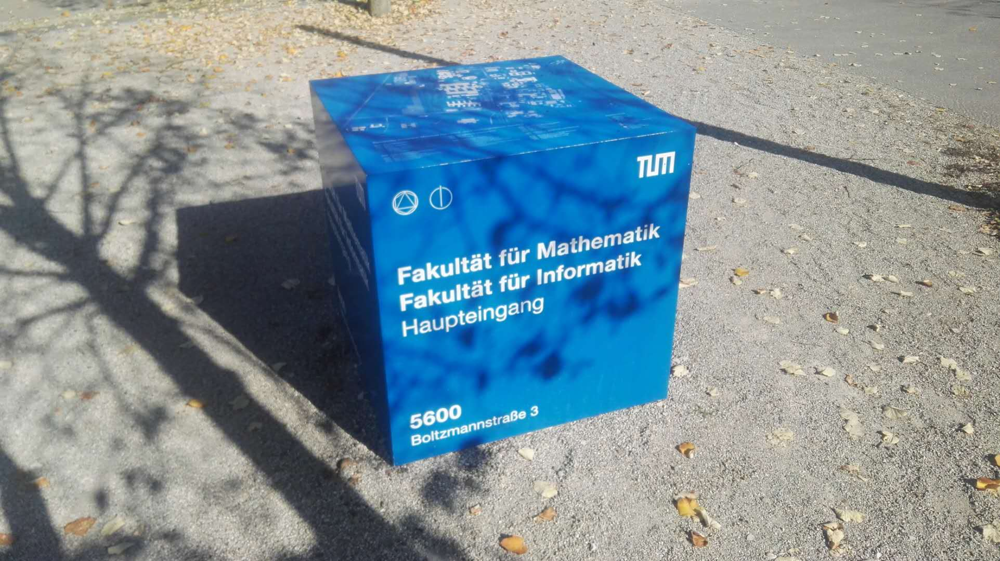

This is a Homepage:
I am a Ph.D. candidate (cryptography & information security) with the School of Cyber Science and Engineering, Shanghai Jiao Tong University, Shanghai, P.R.China.
Fig.1 This is me.
My research interest covers information theory, cryptography, and machine learning. Specifically graphical models, learning automata, fuzzy theory etc. I am interested in related fields in mathematics and physics as well.
My education experience covers:
- Nanjing Foreign Languages School,
Nanjing, China. 09/2009-06/2014.
- Shanghai Jiao Tong University, School of Foreign Languages,
Shanghai, China. 09/2015-06/2019.
- Shanghai Jiao Tong University, School of Cyber Science and Engineering,
Shanghai, China. 09/2015-now.
- Shanghai Jiao Tong University, Department of Computer Science and Engineering,
Shanghai, China. 04/2017-now.
Fig.2 Gate of SJTU.
(combined with the painting style of The Starry Night by GAN.)
- Technische Universit?t München, Department of Informatik (Computer Science),
München, Germany. 10/2017-03/2018 (exchange program).

Fig.3 Landmark of the Department of Informatik, TUM.
Below are some of my works:
-
"Probabilistic Model of Object Detection Based on Convolutional Neural Network",
International Conference on Communication, Signal Procssing and Systems (CSPS 2017),
Lecture Notes on Electrical Engineering (LNEE), Springer.
-
"Laplace Exponential Family Principal Component Analysis",
International Conference on Intelligent Computing (ICIC 2018),
Lecture Notes on Computer Science (LNCS), Springer
-
"Gaussian Iteration: A Noval Way to Collaborative Filtering",
International Conference on Intelligent Computing (ICIC 2016),
Lecture Notes on Computer Science (LNCS), Springer. (as a co-author)
-
"An Efficient Classification method of Uncertain Data with Sampling" ,
International Conference on Communication, Signal Procssing and Systems (CSPS 2018),
Lecture Notes on Electrical Engineering (LNEE), Springer. (as a co-author)
-
"A Multi-view Deep Learning Approach for Detecting Threats on 3D Human Body" ,
International Conference on Communication, Signal Procssing and Systems (CSPS 2018),
Lecture Notes on Electrical Engineering (LNEE), Springer. (as a co-author)
-
"Lip Segmentation with Muti-Scale Features Based on Fully Convolution Network" ,
IEEE International Conference on Data Science in Cyberspace (DSC 2018). (as a co-author)
-
"Statistical Hypothesis Test Based Learning Automaton" ,
IEEE Access.
-
"Bayesian Possibilistic C-Means Clustering Screening for Cervical Cancer",
Information Sciences.
-
"Bayesian Inference Based Learning Automaton in Fuzzy Environments",
(under review).
-
"Maximizing Influence on Social Networks with Conjugate Learning Automata",
Globecom 2019, SAC::Social Network Track.
-
"An Efficient Parameter-Free Learning Automaton Scheme"
IEEE Transactions on Neural Network and Learning Systems.
-
"Influence Maximization on Dynamic Social Networks with Conjugate Learning Automata",
(under review).
-
"On the Submodularity of Diffusion Models: Equivalent Conditions and Applications",
(pre-print).
-
"Sensor Deployment for Wireless Sensor Networks: A Conjugate Learning Automata-Based Energy-Efficient Approach",
IEEE Wireless Communications.
-
"Gaussian Process Bandits for Online Influence Maximization",
ICDM 2020 Workshop on Social Network and Service.
-
"Social Influence Spread Prediction with Graph Learning and Cascade Model",
(under review).
-
"Large-Scale Malicious Software Classification with Fuzzified Features and Boosted Fuzzy Random Forest",
IEEE Transactions on Fuzzy Syste,s.
-
"The Electromagnetic Balance Game: A Probabilistic Perspective",
(pre-print).
-
"Solving the Three-Player Game",
(pre-print).
-
"Hierarchy-NMS：Merging Candidate Bounding Boxes for Cerebrospinal Fluid Cell Image Segmentation",
CISAI 2020.
Here are some on-going works:
-
"Bayesian Possibilistic C-Means Clustering".
-
Tensor learning as coordinate transformation.
-
34 BP.
-
Secure Partition of the Training Set for Group Signature.
-
Towards Robust Machine Learning: An Eigen Perspective.
You are not supposed to download the files above for usages other than non-official referring.
On-going works reject non-authorized referring, pls be gentle. :)
My academic service includes:
-
Reviewer for APSIPA 2019.
-
Reviewer for ICECCS 2020.
-
TPC member of APSIPA 2020.
-
Reviewer for IEEE Transactions on Fuzzy Systems.
-
Reviewer for IEEE Transactions on Neural Network and Learning Systems.
-
Reviewer for Pattern Recognition.
-
TA for Information Theory and Encoding (NIS7007), Fall 2020.
I participated in some competitions:
-
The 9th National College Student Information Security Contest (CISCN 2016),
"Deep Learning Based Detection System of Fishing SMS"
First prize nationwide(project competetion), 08/2016.
-
The 26th Contemporary Undergraduate Mathematical Contest in Modeling (CUMCM 2017),
"Probability-based Scheme for Crowdsourcing Pricing"
Second prize nationwide, First prize in Shanghai division, Top 2 in solving this problem within SJTU, 10/2017.
Beside publications and official competitions, I have been devoting lots of time to open-source science essays and non-profit documents (there are numerous incomplete or ongoing works that are not on list):
-
Lecture notes for The 26th Contemporary Undergraduate Mathematical Contest in Modeling (CUMCM 2017) on Principal Component Analysis and slide.
-
Lecture notes for The 26th Contemporary Undergraduate Mathematical Contest in Modeling (CUMCM 2017) on QueuingTheory and slide.
-
Lecture notes for Mathematical Contest in Modeling/The Interdisciplinary Contest in Modeling (MCM/ICM 2018) on Bayesian Network.
-
Lecture notes for Mathematical Contest in Modeling/The Interdisciplinary Contest in Modeling (MCM/ICM 2018) on Convex Optimization.
-
Partial solution to machine learning textbook "Machine Learning: A Probabilistic Perspective", see also this link.
-
A Very Brief Review on Elements of Statistical Physics. (On Going...).
{kind=link}
{kind=link}
{kind=link}
{kind=link}
{kind=link}
{kind=link}
{kind=link}
{kind=link}
{kind=link}